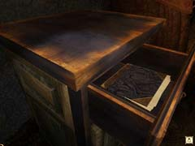

| 概要 | 地図 | |
| 淡いヒント集 | ヒント集 | 的確なヒント集 |
| 攻略最短ルート | Syberia 攻略へ |
| << 前の段階へ | 地域選択へ | 次の段階へ >> |
コムコルツグラッド

坑道を抜け、エレベーターに乗るとあなたは工場の内部へ着くだろう。 始めにパイプオルガンを探して欲しい。このオルガンに設置された人形のそばにドライバーが置いてあるのだ。これを忘れずに回収して欲しい。 
次にここへ移動して欲しい。ここをよく調べると分かるが、ハシゴを使うことができれば、上へ移動できそうだ。そこで、ハシゴに付けられた看板を調べて欲しい。 
この看板である。この看板の四隅にはねじが取り付けられている。ドライバーでねじを外してしまおう。 上ったところのすぐ左に犯人がいる。    犯人の主張はこうだ。コムコルツグラッドにエレナ・ロマンスキーを連れてくれば、オスカーの腕を返す。 要するに彼女を連れてくればよい。しかし、エレナの居場所は分からない。そこで、犯人が作ったエレナの資料室を調べてみよう。机の引き出しに入っている冊子に重要な情報が書いてある。この冊子にはエレナ以外にもとある男性の名前が入っている。その人物は、数日前にあなた(ケイト)の母親(ママ)が出会っているはずだ。 さっそく、ママへ電話をしよう。 |
| << 前の段階へ | 地域選択へ | 次の段階へ >> |
| 概要 | 地図 | |
| 淡いヒント集 | ヒント集 | 的確なヒント集 |
| 攻略最短ルート | Syberia 攻略へ |
Syberia
| 目次へ戻る | ページの上部へ |